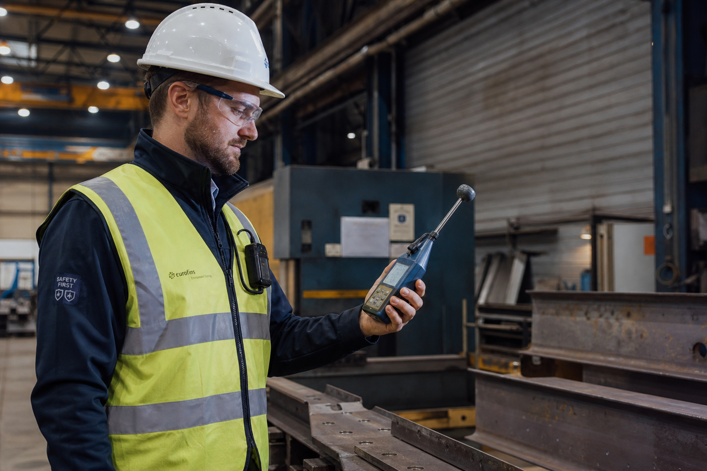

Arbo, veiligheid en arbeidshygiëne helder in kaart gebracht.
Pim Berends | Veiligheidskundige & arbeidshygiënist
Vanuit Berends Arbo & Veiligheid help ik industriële bedrijven en publieke organisaties om risico's rond veiligheid en gezondheid beter te begrijpen. Met RI&E's, arbeidshygiënisch onderzoek, blootstellingsonderzoeken, trainingen en veiligheidskundig advies maak ik complexe vraagstukken begrijpelijk en toepasbaar.
Veilig werken begint met weten waar de risico's zitten
Risico's zijn niet altijd direct zichtbaar. Denk aan blootstelling aan stoffen, stof, dampen, onveilige werksituaties of werkzaamheden die op papier goed geregeld lijken, maar op de werkvloer anders uitpakken.
Met gericht onderzoek en een praktische blik wordt duidelijk wat er speelt, wat prioriteit heeft en welke stappen nodig zijn.

Extra focus op arbeidshygiëne en blootstellingsrisico's
Een belangrijk onderdeel van mijn werk is arbeidshygiëne: het herkennen, beoordelen en beheersen van gezondheidsrisico's op de werkvloer. Denk aan het registreren en beoordelen van gevaarlijke stoffen, blootstellingsmetingen of onderzoek naar stof, dampen en andere omstandigheden die van invloed zijn op veilig en gezond werken.
Geen ingewikkeld rapport om in een la te leggen, maar advies waar je als organisatie mee verder kunt.
Onderzoek, advies en praktische ondersteuning
De ene keer gaat het om een meting of rapportage. De andere keer om advies, training of tijdelijke ondersteuning bij een veiligheidsvraagstuk. De insteek blijft hetzelfde: achterhalen wat er speelt, kijken wat op locatie nodig is en terugkoppelen waar je als organisatie mee verder kunt. Daarbij combineer ik praktijkervaring met specialistische kennis, zodat de vervolgstappen concreet blijven.
- Advies bij arbo- en veiligheidsvraagstukken Praktische ondersteuning bij vragen rond veiligheid, gezondheid en werksituaties.
- RI&E's en risico-inventarisatie Risico's op de werkvloer in kaart brengen en vertalen naar concrete verbeterpunten.
- Gevaarlijke stoffen registreren en beoordelen Inzicht geven in stoffen, blootstelling en wat nodig is om veilig te werken.
- Blootstellingsonderzoeken na RI&E of bij specifieke vragen Gericht onderzoek wanneer gezondheidsrisico's minder direct zichtbaar zijn.
- Werkplekmetingen en rapportages Metingen op locatie met een duidelijke terugkoppeling van de bevindingen.
- Trainingen, VCA en intern transport Praktijkgerichte trainingen en instructies voor veilig werken.
Een arbo- of veiligheidsvraagstuk bespreken?
Heb je een vraag over RI&E, blootstelling, gevaarlijke stoffen, trainingen of een ander veiligheidsvraagstuk? Neem gerust contact op om de situatie kort te bespreken.